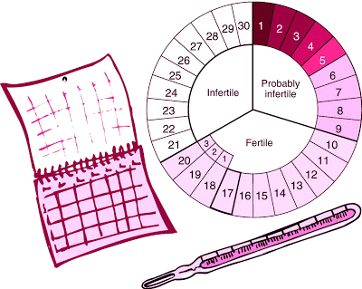

Método Sinto-Térmico
O Método Sinto-Térmico combina vários indicadores fisiológicos (dor, tensão dos seios e as variações do colo do útero) e de fertilidade (temperatura corporal basal e muco cervical) que são levados em conta na identificação dos períodos férteis e inférteis do ciclo menstrual.
Temperatura Corporal Basal
A temperatura corporal da mulher, em repouso, normalmente aumenta após a ovulação.
Desvantagens:
Usando somente a temperatura, são disponíveis só aqueles dias após o aumento da temperatura para adiar uma gravidez
Mas doenças também causam aumento da temperatura!
Muco Cervical
Mudanças na sensação vulvar durante o processo de limpeza por um pedaço de papel branco sem cheiro e dobrado, da frente para trás, antes ou após urinar – Em outras palavras, a sensação que é produzida durante o processo de limpeza: Seca, molhada ou lubrificada
Olhar então o papel; se algo está presente, fazer o teste com dedos – tocar e afastar gradualmente
Estica <1/2 polegada (1,27 cm)= Pegajoso
Estica >1/2 polegada (1,27 cm)= Elástico
Para ler mais informações sobre o método acesse: https://www.cenplafam.com.br/blank-13